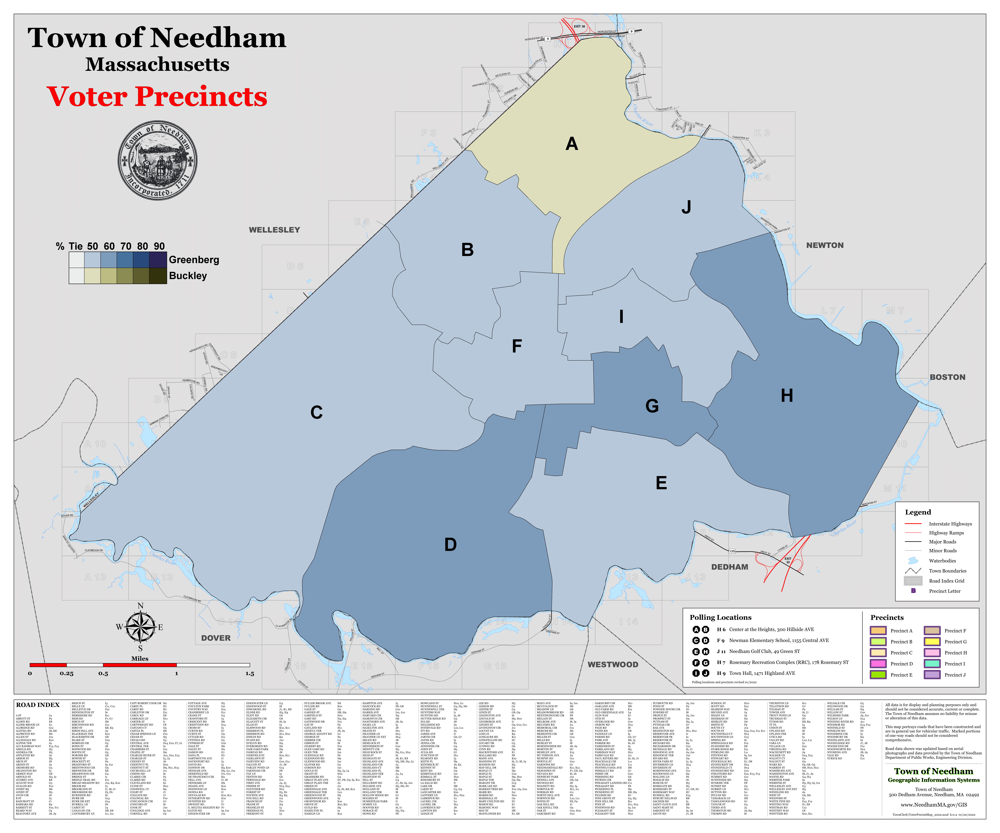

<!DOCTYPE html>
<html>
  <head>
    <title>Needham Election Results</title>
    <link href="town_seal.png" rel="icon">
	<link rel="stylesheet" href="style.css">
  </head>
  <body>
	<div class="navigation_bar">
		<a href="index.html">Index</a>
		<a href="#">Town Elections</a> <!-- Link to top of current page -->
	</div>
    <h2>Needham Election Results – Precinct Maps</h2>
	<h3>MBTA Communities Act Referendum</h3>
	
	<div class="election_info">
		<ul>
			<li><b>Date:</b> <div class="election-date">January 2025</div></li>
			<li><b>Type:</b> <div class="type-referendum">Referendum</div></li>
			<li><b>Turnout:</b> <div class="election-turnout">11,829 votes</div></li>
			<li><b>Results:</b> <div class="election-winner">No</div> (58.44%) over Yes (41.56%)</li>
		</ul>
		<p class="election_para">
		 The MBTA Communities Act referendum was certainly a time for the town. Mandated from on high, rezoning requirements were well and truly exceeded by a vote of the select board and town meeting. But there was just enough opposition within the town government to put the whole affair to a referendum. A close-run thing, even if the map is entirely red (it is such because of the homogenous nature of such a small town, but do note the far north still being distinctly its own side of things). With the expanded plan rejected, the town moved forwards with a lesser plan up-zoning only the amount required by law. This plan passed without much trouble. Just four months later (and in the two elections you can see below), the Planning Board and Housing Authority races, though on the face of things non-partisan (as all town positions are), functioned as de facto proxy battles over the town and its future development. As can be seen below, the upzoning/developmentalist faction's Greenburg won out over the against/status quo faction's compromise candidate in Buckley, though the north of the town still lent its support to the latter. Though backed by the upzoners, Greenburg endorsed only the more limited base plan in the wake of the expanded plan's defeat in January (as did Buckley).
		</p>
	</div>
	<h2>2025 Planning Board</h3>
	
	<div class="election_info">
		<ul>
			<li><b>Date:</b> <div class="election-date">April 2025</div></li>
			<li><b>Type:</b> <div class="type-election">Election</div></li>
			<li><b>Turnout:</b> <div class="election-turnout">7,340 votes</div></li>
			<li><b>Results:</b> <div class="election-winner">Eric Greenberg</div> (58.02%) over Kenneth G. Buckley (41.98%)</li>
		</ul>
	</div>
	<h2>2025 Housing Authority</h3>
	
	<div class="election_info">
		<ul>
			<li><b>Date:</b> <div class="election-date">April 2025</div></li>
			<li><b>Type:</b> <div class="type-election">Election</div></li>
			<li><b>Turnout:</b> <div class="election-turnout">7,340 votes</div></li>
			<li><b>Results:</b> <div class="election-winner">Geoffrey Engler</div> (51.90%) over Barbara McDonald (48.10%)</li>
		</ul>
		<p class="election_para">
		The Housing Authority election was far closer. The develeopmentalist faction's Geoff Engler took a narrow victory over the status quo coalition's Barbara McDonald. As before, the relatively wealthier and old-money side of town went for the developmentalists, and the less affluent and newer side of town went for the status quo. An amusing reversal, if you ask me, but a common one in politics today.
		</p>
	</div>
  </body>
</html>